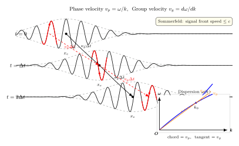

"相速度"与"群速度"哪个是光的真速度?
看到本节标题, 读者也许会觉得莫名其妙: 光不是有一个速度吗? 真空中 $c \approx 3\times 10^8\,\mathrm{m/s}$, 介质中 $c/n$. 什么"相速度"和"群速度"的分歧? 但只要你做一次具体计算——在一段色散介质里打入一个脉冲, 追踪它的波峰, 再追踪它的峰值——就会发现这两条轨迹的斜率并不相等. 更糟的是, 在某些条件下, 波峰的速度可以超过 $c$, 而脉冲的峰值甚至可以慢到 $17$ 米每秒.
这到底是怎么回事? 哪一个才是"光的速度"? 爱因斯坦的相对论说信息不能超过 $c$, 它限制的是哪个? 这一节我们用第一性原理一步步拆开.
一、单色平面波与相速度
最简单的光波写作一个余弦: $$ E(x,t) = E_0 \cos(kx - \omega t), \tag{1} $$ 其中 $k$ 是波数, $\omega$ 是角频率. 为什么是余弦? 因为真空中的波动方程 $\partial_t^2 E = c^2 \partial_x^2 E$ 是线性的, 任何解都能分解成这种单色平面波的叠加 (傅立叶). 单色波是"积木", 我们先研究积木的速度, 再研究叠加出来的真实光的速度.
式 (1) 的波峰满足 $kx - \omega t = 2\pi n$, 也就是 $x = (\omega/k)t + 2\pi n/k$. 波峰随时间沿 $x$ 方向前进的速度就是 $$ v_p = \frac{\omega}{k}, \tag{2} $$ 称为相速度. 它描述的是等相位面的移动速度.
真空中, 麦克斯韦方程给出 $\omega = ck$ (色散关系是一条过原点的直线), 代入得到 $v_p = c$. 这正是上一节算出的结果, 也是我们熟悉的那个"光速". 但此时要警惕: $v_p$ 描述的并不是能量的速度, 也不是信息的速度, 它只是一个相位面的抽象指标. 在真空里它恰好等于 $c$, 让我们误以为这就是"光的真速度", 但只要进入介质, 分歧就冒出来了.
进入一段折射率为 $n(\omega)$ 的介质, 波数变成 $k = n(\omega) \omega/c$, 相速度是 $$ v_p = \frac{\omega}{k} = \frac{c}{n(\omega)}. $$ 玻璃 $n \approx 1.5$, 所以玻璃中的相速度 $$ v_p^{\text{glass}} = \frac{3\times 10^8}{1.5} = 2.0\times 10^8\,\mathrm{m/s}, $$ 这是一个具体的数字. 对可见光而言, 玻璃的折射率随频率微弱变化——这正是棱镜分色的原因——但在单色近似下, 相速度确实被 $n$ 拖慢. 反过来, 在 X 射线或某些等离子体中, $n \lt 1$, 相速度反而超过 $c$! 这一点常常被当作"超光速"的噱头, 但马上就会看到, 它并不真的传递信息.
二、真实光信号是波包: 群速度的登场
理想单色波在时间上无限长、在空间上无限远, 它是纯抽象——它什么信息也不携带, 因为"信息"意味着可区分的事件, 而完全周期性的波永远不变. 一个真实的光信号, 例如激光脉冲、电视信号、甚至"打开手电筒"这个动作, 都是有限时长的波, 其频谱必然有一定宽度 $\Delta\omega$. 这样的信号可以写成单色波的叠加: $$ E(x,t) = \int A(k) \cos(kx - \omega(k)\, t)\, dk, $$ 其中 $A(k)$ 是频谱幅度, 集中在中心波数 $k_0$ 附近, 宽度 $\Delta k$.
当 $A(k)$ 窄时, 我们可以把 $\omega(k)$ 在 $k_0$ 附近泰勒展开: $$ \omega(k) \approx \omega_0 + \left.\frac{d\omega}{dk}\right|_{k_0}(k - k_0). $$ 带回积分, 经过简单的变量替换, $E(x,t)$ 分成两个因子: 一个以 $v_p = \omega_0/k_0$ 前进的"载波"振荡, 和一个以 $$ v_g = \left.\frac{d\omega}{dk}\right|_{k_0} \tag{3} $$ 前进的"包络". 这里的 $v_g$ 就是群速度——能量、峰值、信号的速度, 也就是真正把"一个脉冲从 A 点送到 B 点"所用的速度.
自问: 为什么包络的速度是 $d\omega/dk$, 而不是 $\omega/k$? 这是因为包络是由许多不同 $k$ 的分量叠加出来的. 每一对相邻的 $k$ 分量会产生一组"拍", 拍包络的前进速度由相邻分量的相位差随时间的演化决定, 导数自然出现. 相速度关心的是"一个相位点的轨迹", 群速度关心的是"整个波包的峰值的轨迹", 两个问题不同, 答案不同.
在色散关系 $\omega(k)$ 的图上, 相速度是从原点到曲线上某点的连线斜率, 群速度是该点的切线斜率. 对真空, $\omega = ck$ 是直线, 连线等于切线, $v_p = v_g = c$, 问题消失. 对介质, $\omega(k)$ 是曲线, 两个斜率通常不等, 这就是色散的本质——不同频率传得不一样快, 波包会展开, 彩虹会散开.

三、真空、玻璃、慢光: 三个极限
色散关系 $\omega(k)$ 决定 $v_p$ 与 $v_g$ 的具体数值. 我们分三个极限来看, 正好覆盖从"光速就是 $c$"到"光速比自行车还慢"的跨度.
(a) 真空: $v_p = v_g = c$. 色散关系 $\omega = ck$ 线性, 一切单色分量同速前进, 波包不散, 包络和相位一起以 $c$ 传播. 这是整个经典电动力学的起点, 也是爱因斯坦把"真空光速恒定"升格为原理的原因. 相速度和群速度的分歧是介质的专属现象——真空不可压缩, 没有色散, 没有争议.
(b) 玻璃 (正常色散): 折射率 $n(\omega)$ 随 $\omega$ 微弱上升 ($dn/d\omega \gt 0$). 用 $k = n\omega/c$ 对 $\omega$ 求导, 可以得到 $$ \frac{1}{v_g} = \frac{dk}{d\omega} = \frac{n}{c} + \frac{\omega}{c}\frac{dn}{d\omega}. $$ 所以 $$ v_g = \frac{c}{n + \omega\,dn/d\omega}. $$ 对玻璃 $n \approx 1.5$, $\omega\,dn/d\omega$ 约为 $0.05$, 因此 $v_g \approx c/1.55 \approx 1.94\times 10^8\,\mathrm{m/s}$, 略小于相速度 $v_p = c/n \approx 2.0\times 10^8\,\mathrm{m/s}$. 日常尺度上两者差别不到 5%, 所以光纤通信工程师在短距离近似里可以把它们都当作 $c/n$——但一旦跨越上千公里的洲际海底光缆, 这个小小的 $\omega\,dn/d\omega$ 就会把原本窄的数字脉冲展宽, 直到两个比特分不清, 这就是色散展宽, 是 1550 nm 波段光纤的核心工程难题.
(c) 冷原子介质中的慢光: 真正让群速度变戏法的是共振附近的"反常"色散. 原子在某个跃迁频率附近折射率对频率的依赖非常陡, $dn/d\omega$ 可以大到让分母 $n + \omega\,dn/d\omega$ 变成几千万. Lene Hau 和合作者 1999 年在《Nature》上报道了轰动的结果: 用电磁感应透明 (EIT) 技术, 在钠原子玻色-爱因斯坦凝聚态中让光脉冲的群速度降到约 $$ v_g \approx 17\,\mathrm{m/s}, $$ 比自行车还慢. 一束激光穿过几十微米的冷原子云, 竟然需要约 $10^{-6}$ 秒. 这不仅仅是"慢", 而是"把光的信息临时存在原子的集体自旋里, 再按需读出"——后续实验甚至让光"停下来"数毫秒再放出. 这里, 相速度仍然接近 $c$ (因为 $n$ 本身不大, 陡的是 $n$ 的导数), 但群速度几乎归零. 谁才是"光的真速度"? 若你问脉冲从哪到哪花了多久, 答案是群速度; 若你问电场的相位一秒转多少圈, 答案仍然是相速度. 两个问题, 两个答案, 谁也不冒犯相对论.
相反的方向也有. 2000 年 Lijun Wang 等人在铯蒸气中演示了群速度"超光速"甚至"负群速度": 脉冲峰值似乎在进入介质前就从另一端出来. 这利用的是反常色散区 ($dn/d\omega \lt 0$) 让分母变得很小甚至为负. 但精细分析表明, 这种超光速只是波包前沿信息的"重新塑形", 并不让任何新的信息抢先到达——一旦你在入射端突然关掉光源这个"信号", 出射端不会提前知道, 真正的信号前沿严格以 $\le c$ 的速度传播.
四、信号速度不超过 $c$: Sommerfeld-Brillouin 与历史
到这里, 很自然的一个担心是: 既然 $v_p$ 和 $v_g$ 都可以大于 $c$, 相对论会不会出问题? 解决这个困惑的是 Sommerfeld 和 Brillouin 在 1914 年前后的一系列论文. 他们考虑一个"尖锐开关"信号: 在 $t \lt 0$ 时电场为零, 在 $t = 0$ 时突然打开一列单色波. 这样的信号有无穷宽的频谱, 波包近似失效. 他们把场写成复平面上的路径积分, 仔细分析极点与鞍点, 得到一个结论: 信号的前沿 (front, 第一个非零扰动) 严格以真空光速 $c$ 传播, 与介质的色散无关. 前沿之后, 依次到达"前驱波" (Sommerfeld precursor 和 Brillouin precursor, 高频成分先到), 最后才是可辨认的主体波包. 群速度描述的是主体, 而非信号前沿.
于是相对论与色散相安无事: 携带"事件开始"这一最根本信息的是前沿, 前沿以 $c$ 前进, 这是相对论真正禁止突破的速度. 群速度可以更慢 (慢光), 也可以在某些人造的反常色散区看似更快甚至"超光速", 但它从未能将一个比特的新信息提前于 $t_0 + d/c$ 送到距离 $d$ 外的接收端. 因果律通过前沿得到保护, 波包峰值只是统计意义上"重心"的轨迹, 可以任意重新雕塑.
这一点 Rayleigh 男爵在 1881 年其实已经有了直觉. 他观察海面波纹, 注意到"一组波的形状移动得比单个波冠的前进更慢", 并引入了"群速度"这个词. 但他那时讨论的是水波, 没有相对论的压力. 真正把群速度、相速度、信号速度三者厘清, 并把"光速不可超越"限定在信号速度这一条, 是 Sommerfeld 学派的功绩. 到 1999 年 Hau 实验把群速度压到 $17\,\mathrm{m/s}$, 再到量子信息时代用慢光做光存储, 这一切都是在 Sommerfeld 画好的框架内玩花样——相速度可以百万米每秒地飞, 群速度可以慢如蜗牛, 信号前沿稳稳守住 $c$.
最后补一个小验证性极限: 如果把色散关系取为最简单的 $\omega = ck$, 那么 $d\omega/dk = c$ 与 $\omega/k = c$ 重合, 波包一切零散现象消失. 这恰是真空的答案, 也是我们在第 12 节从麦克斯韦方程得到的那个 $c$. 换言之, 本节并没有推翻上一节, 只是告诉我们: 上一节的 $c$ 是真空的极限特例, 一旦进入任何真实介质, "光的速度"就分裂为三个互相关联但可以大不相同的数——相、群、信号. 真正普适的不变量, 是最后那个.
小结
"光是什么" 在这一节被问成了 "光走得多快". 我们看到单色波是抽象积木, 真实光信号是有限频谱的波包, 它有两种自然速度: 相速度 $v_p = \omega/k$ 管波峰, 群速度 $v_g = d\omega/dk$ 管能量. 真空中 $\omega = ck$ 让两者并在 $c$; 介质的色散把它们拆开: 玻璃里 $v_g \lesssim v_p \approx 2\times 10^8\,\mathrm{m/s}$, 稀薄冷原子云里 $v_g$ 可以压到 $17\,\mathrm{m/s}$. 相速度"超光速"或群速度"超光速"都不违反相对论, 因为相对论真正钉死的是信号前沿, 严格 $\le c$——这是 Sommerfeld 在 1914 年就证明的. 下一节, 我们将把目光从"光走得多快"转到"光推得多重": 当光打在物体上, 它会传递动量, 带来辐射压, 这是理解光子的又一条入口.
▲